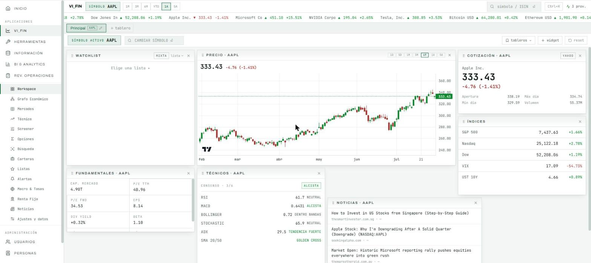
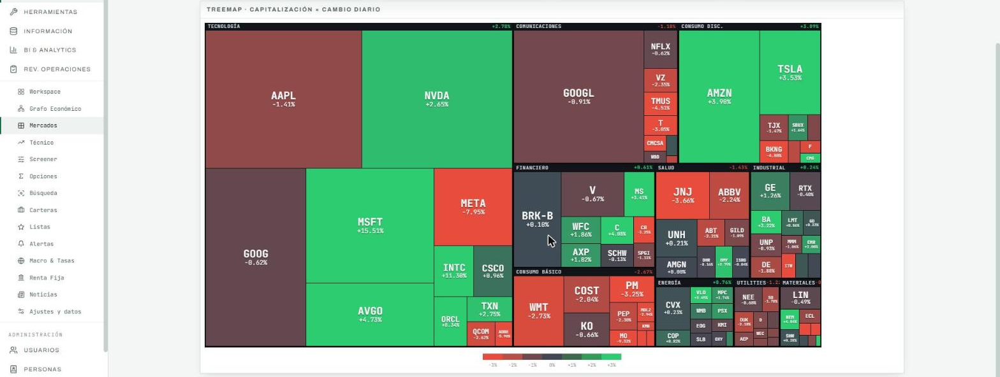
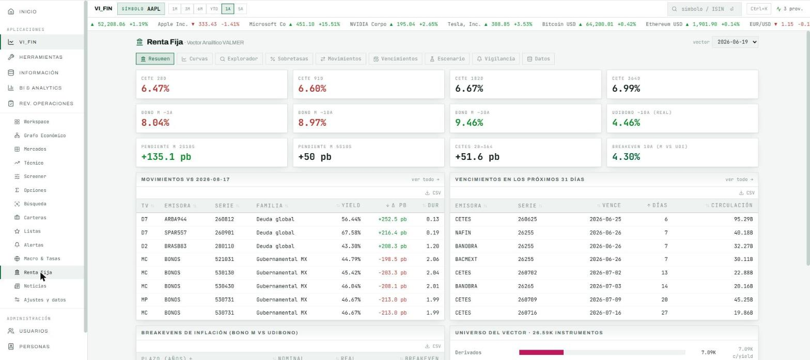
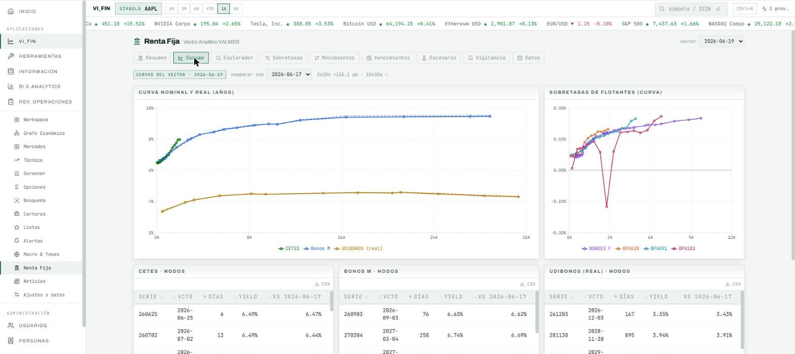
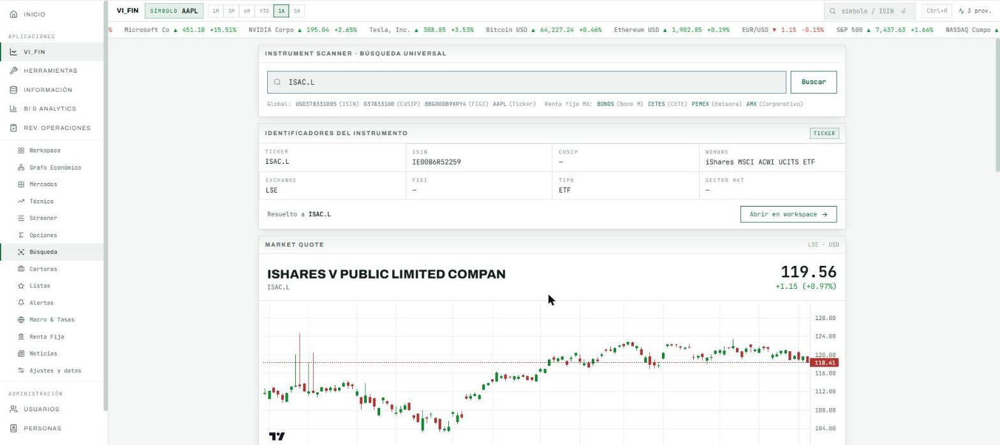
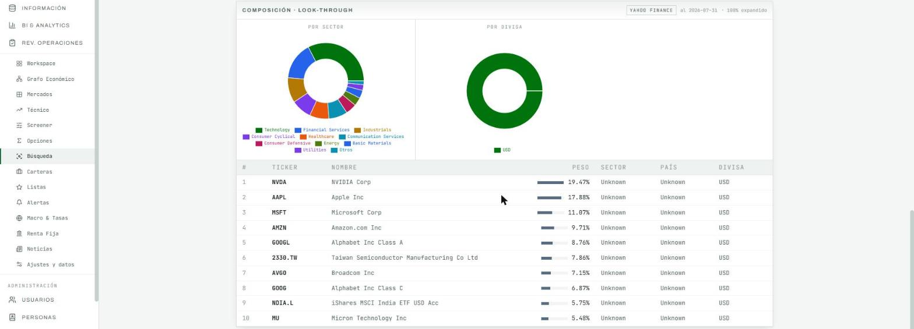

01 · Plataforma webWeb platform
Portal internoInternal platform
La plataforma de operación, información y analítica de una firma mexicana de asesoría financiera. La diseñé y la construí completa, con backend, frontend, base de datos, pipelines de ingesta, motor de inteligencia de negocio y salida documental. The operations, information and analytics platform of a Mexican financial advisory firm. I designed and built all of it, including the backend, frontend, database, ingestion pipelines, business intelligence engine and document output.
Lo que construíWhat I built
Un servicio HTTP único sobre PostgreSQL, con una sola sesión, un catálogo de 47 permisos granulares por aplicación y sección, bitácora de auditoría, una cola de trabajos que sobrevive al reinicio y un despliegue que no depende de la máquina de quien lo usa. Sustituyó tres aplicaciones de escritorio que no tenían autenticación ni modelo de autorización. A single HTTP service on PostgreSQL, with one session, a catalogue of 47 granular permissions by application and section, an audit log, a job queue that survives restarts and a deployment that does not depend on the user's machine. It replaced three desktop applications that had no authentication and no authorization model.
Dónde está el cuidadoWhere the care went
En la aritmética del dinero y en la concurrencia. Las 203 pruebas automatizadas se concentran en el error que no se ve, y se validaron con pruebas de mutación para comprobar que afirman lo que dicen. Los trabajos pesados no bloquean el servidor, las conexiones se devuelven ante una excepción y el parseo en paralelo de estados de cuenta nunca sostiene una transacción abierta. In the arithmetic of money and in concurrency. The 203 automated tests focus on the error you do not see, and were validated with mutation testing to confirm they assert what they claim. Heavy jobs never block the server, connections are returned on exception, and parallel parsing of account statements never holds a transaction open.
Las cinco aplicacionesThe five applications
-
01
Terminal financieraFinancial terminal
Mercados, screener, opciones con griegas, renta fija sobre el vector de precios de VALMER y un buscador universal que resuelve la identidad de cualquier instrumento antes de traer sus datos.Markets, a screener, options with greeks, fixed income on the VALMER price vector, and a universal search that resolves any instrument's identity before fetching its data.
-
02
Inteligencia de negocioBusiness intelligence
Consolidado patrimonial, net new money que separa el flujo real del efecto de mercado, scorecards de asesores y custodios, conciliación de tesorería y un catálogo de emisoras con identificador canónico.Consolidated wealth, net new money that separates real flow from market effect, advisor and custodian scorecards, treasury reconciliation and an issuer catalogue with a canonical identifier.
-
03
Revisión de operacionesTrade review
Una bandeja de revisión con bloqueo por usuario que se actualiza sola cuando la base de datos avisa de una operación nueva, más asignaciones masivas, precios, métricas y reportes.A review queue with per-user locking that updates itself when the database announces a new trade, plus bulk assignments, prices, metrics and reports.
-
04
Herramientas operativasOperational tooling
Modelador de procesos con motor de ejecución, suite de PDF con OCR y firma digital, medición de tiempos de alta de contratos y rendimientos por moneda con la metodología del propio banco.A process modeller with an execution engine, a PDF suite with OCR and digital signing, contract onboarding time measurement, and per-currency returns using the bank's own methodology.
-
05
InformaciónInformation
La capa de ingesta que alimenta a las otras cuatro, con tenencia mensual, estados de cuenta de 30 custodios y recolección diaria de archivos.The ingestion layer that feeds the other four, with monthly holdings, account statements from 30 custodians and daily file collection.
La plataforma, por dentroInside the platform
Capturas del entorno de desarrollo, sin identidad corporativa ni datos de clientes. Screenshots from the development environment, with no corporate identity and no client data. The interface is in Spanish.





ISAC.L de un ETF listado en Londres se resuelve a su ISIN irlandés. Resolver identidad primero evita conciliar dos series que parecen el mismo papel y no lo son.
It takes ISIN, CUSIP, SEDOL, FIGI, ticker or name and resolves the instrument's identity first. In the example, the ticker ISAC.L of an ETF listed in London resolves to its Irish ISIN. Resolving identity first prevents reconciling two series that look like the same security and are not.

Comprar o construirBuy or build
La regla que apliqué es que construir gana cuando el precio del proveedor crece con algo que no controlo, como asientos o activos bajo gestión, y lo que necesito ya vive en nuestros datos. Comprar gana cuando el proveedor es la fuente y no el envoltorio. The rule I applied is that building wins when the vendor's price grows with something I do not control, such as seats or assets under management, and what I need already lives in our data. Buying wins when the vendor is the source and not the wrapper.
-
Reportes patrimonialesWealth reporting
USD 75,000 a 300,000/añoyear
Plataforma de reporteo patrimonial. Rango reportado por terceros; el proveedor no publica precios.Wealth reporting platform. Range reported by third parties; the vendor publishes no pricing.
Construido. El reporte es la capa final sobre una conciliación que ya era nuestra.Built. The report is the final layer on a reconciliation that was already ours.
-
Composición de ETFsETF composition
USD 17,500/año · 1.er asientoyear · 1st seat
Última cifra pública de un proveedor de datos de mercado, en su reporte 10-K de 2016.Last public figure from a market data provider, in its 2016 10-K filing.
Construido. Los constituyentes están en reportes públicos; se pagaba el trabajo de leerlos.Built. The constituents are in public filings; what was paid for was reading them.
-
Edición de PDF, OCR y firmaPDF editing, OCR and signing
USD 288/año · por asientoyear · per seat
Precio de lista 2026 del editor de escritorio líder en su plan para equipos.2026 list price of the leading desktop editor on its team plan.
Construido. El costo crecía con cada persona; el servicio interno cuesta lo mismo para todos.Built. The cost grew with every person; the internal service costs the same for everyone.
-
Procesos con ejecuciónProcesses with execution
sin precio públicono public price
El modelador de escritorio es gratuito; se cobra el nivel de automatización.The desktop modeller is free; the automation tier is what gets charged.
Construido. El valor nunca estuvo en el diagrama sino en el motor que lo ejecuta.Built. The value was never in the diagram but in the engine that runs it.
Comprar fue lo correcto tres veces más, con el vector de precios de VALMER, porque una fuente de valuación oficial no se reconstruye, con la base de datos y el framework, y con la librería de gráficos. El criterio no es construir, es saber cuál de las dos cosas cuesta más a cinco años. Buying was the right call three more times, with the VALMER price vector, because an official valuation source is not something you rebuild, with the database and the framework, and with the charting library. The criterion is not to build, it is to know which of the two costs more over five years.
Cifras de lista o reportadas por terceros para el equivalente comercial de cada capacidad, no el gasto de ninguna firma en particular. List or third-party-reported figures for the commercial equivalent of each capability, not any particular firm's spending.